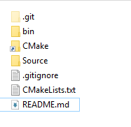
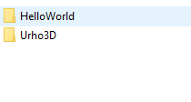
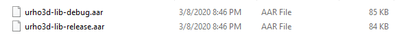
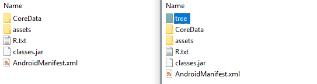
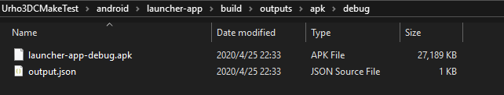
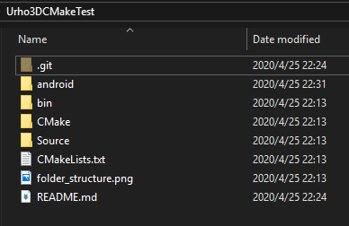
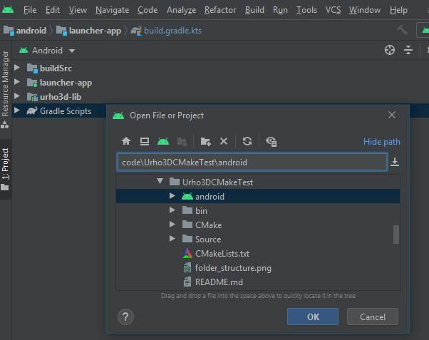
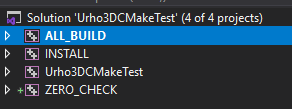

I’ve been trying to figure out a clean way to setup Android project. I don’t really want to modify sample and continue the development inside Urho folders. An out of Urho/using Urho as a library (AAR for Android) approach is preferred. Currently, on Windows, I have a very clean CMake based project structure working, however, I wonder if there is any Android example that I could follow.
Edit: BTW, I have studied some CMake, Gradle, NDK, etc. No progress yet.
Cheers
WangKai
This is my HelloWorld project that I used to figure out how to work on Android

HelloWorld and Urho3D

Here is my CMakeLists.txt -
# Set CMake minimum version and CMake policy required by UrhoCommon module
cmake_minimum_required (VERSION 3.10.2)
if (COMMAND cmake_policy)
# Libraries linked via full path no longer produce linker search paths
cmake_policy (SET CMP0003 NEW)
# INTERFACE_LINK_LIBRARIES defines the link interface
cmake_policy (SET CMP0022 NEW)
# Disallow use of the LOCATION target property - so we set to OLD as we still need it
cmake_policy (SET CMP0026 OLD)
# MACOSX_RPATH is enabled by default
cmake_policy (SET CMP0042 NEW)
# Honor the visibility properties for SHARED target types only
cmake_policy (SET CMP0063 OLD)
endif ()
# Set project name
project (HelloWorld)
# Set CMake modules search path
set (CMAKE_MODULE_PATH ${CMAKE_SOURCE_DIR}/../Urho3D/CMake/Modules)
# Include UrhoCommon.cmake module after setting project name
include (UrhoCommon)
# Define target name
set (TARGET_NAME HelloWorld)
define_source_files (
GLOB_CPP_PATTERNS
${CMAKE_SOURCE_DIR}/Source/*
GLOB_H_PATTERNS
${CMAKE_SOURCE_DIR}/Source/*
)
source_group(TREE ${CMAKE_CURRENT_SOURCE_DIR} FILES ${SOURCE_FILES})
define_resource_dirs ()
setup_main_executable ()
I tried hard, but no result on Android at all.
johnnycable
What the errors are?
GastaGaming
I also had this dilemma in our Android project. There is one sample project template here https://github.com/Lumak/Urho3D-Android-Project
If I remember correctly we had issues between Kotlin, Gradle, and Android studio they didn’t seem to like each other version numbers or something. Probably the real reason why I did not succeed was that I am a complete noob.
What we ended up doing is that we worked normally in project scaffolding way and when it was time to build to android we edited our main.cpp so that it would be similar to samples.
I hope this helps you forward in your quest. If you figure this thing out plz let me know.
EDIT:
Maybe you can find answer here
WangKai
Thank you GastaGaming! I think they are not using AAR or “out of Urho folder”. But I’m studying them hard.
@johnnycable there are too many issues, I cannot say which piece I missed, when I’m still trying to put the puzzle together.
The whole building system of Urho3D is complicated, people need to know the implementation details to work on different platforms. I don’t know it is common or we just need more documents on these topics. It seems that we need some start point / template/ sample / wizard, to make our code run first.
Since I’m not alone, so I hope I can make it work and post my steps / example here.
weitjong
Before the AAR there is no easy way to use Urho3D as library in Android build. And, even the Rake scaffolding task that we provide does not support Android build. With AAR I see there is a chance to pull this off. YMMV.
WangKai
I wonder if these AARs can work since they are too small (after excluding the “assets”), the main parts are in the *.so files. In other words, dynamic libraries are used.
I have tried setting URHO3D_LIB_TYPE to STATIC (-DURHO3D_LIB_TYPE=STATIC, according to document, it’s actually the default) and passing it to gradle, but it does not work.

WangKai
The whole Gradle + CMake + Android Studio for NDK thing is horrible. Weekend ends now, still no progress.
weitjong
We publish AAR at bintray here like ay other maven artifacts out there.
johnnycable
This week I hope I can crank a windows pc open, so I can test this thing. Today just it took 3 hours to create a bootable usb…
WangKai
IMHO, It’s not a Windows specific issue.
WangKai
Uploaded the testing project -
WangKai
Hi weitjong,
I found that in the AAR I build, there is no “tree” folder, and from bintray you linked, there is this folder in the archive. I find it is the reason why the AARs I built were very small.
Do you know the cause of the problem?

Thanks,
Kai
weitjong
You didn’t provide any information on the errors/warnings, if any, on the build process. As such, my guess on what has happened is as good as yours and anyone else. All the steps taken by CI to build and publish the AAR to Bintray is reproducible. If you cannot get same result with the same steps then It may be host machine or build environment issue. The steps are not verified yet on Windows host so far, AFAIK. Ideally it should just work since it is Java based.
WangKai
Hi guys,
I have solved most of the issues and got a clean project structure for Android building!

1. The project refers Urho3D as a parallel project and reuses most of the stuff from Urho3D, just like a real library, except for CMake folder. (we can also use soft link to reuse CMake folder of Urho3D)
2. Everything Android related is put in `android’ folder, no pollution to project’s root folder.
 3. Android Studio also works

4. Known issue - we have to copy CoreData, Data etc. folders into launcher-app\src\main\assets folder just like Urho3D.
Thanks to all who kindly help me out @weitjong, @Pencheff and others in this forum.
It is not perfect as I wanted, and can be surely cleaned up further. But since it is a good start point so I post it here. I know nothing about Android so please improve it if you are interested.
elix22
I have also written my own Android Template project , also solved issue #4.
You can take look at it and see if it’s relevant to your solution .
The copy Data/CoreDT procedure is done in the link below , line 48
WangKai
Thank you! @elix22! Your solution to the data folders is great. Will these data folders be deleted when we clean the project?
For people who want to change project directory and make folders a little cleaner, the following code in settings.gradle.kts is the key -
No , but it will overwrite modified resources in the next build
WangKai
I met another issue -
In the Visual Studio solution CMake generated, Urho3D project is not included, this leads issues for code referencing and debugging.

How can we add Urho3D project into the solution?
Thanks!
SirNate0
Can you just add the Urho .sln manually?
WangKai
CMake will restore my VS solution if I rebuild the VS solution, which makes the added Urho3D project deleted.
SirNate0
I think the ‘right’ solution might be adding the Urho project as a subproject or something like that (which I don’t think the build system supports at present). As a workaround, you could try something like this:
There may be better ways than this, but I know almost nothing about VS and not that much about CMake.
weitjong
I am a little bit confuse now. Are you doing your Android build using Visual Studio now? Or, this is just another general question on how to use Urho3D library as external library?
WangKai
Hi Weitjong,
Thanks for asking! Yes, I agree the last question about VS is a little off topic. However, the cmake testing template is supposed to be multi-platform.
I have solved building apk in Android Studio, and I just wanted to improve the exe build on Visual Studio on Windows.
@SirNate0 the INCLUDE_EXTERNAL_MSPROJECT surely works for Visual Studio. Thank you very much!
weitjong
Since this is off topic and I am also not familiar with VS, I will keep my comment short. The latest release of VS has a some-what working CMake integration in the IDE itself. This new approach does away with generate-solution-file-then-open-solution-file steps all together. Just open the root project containing the CMakeLists.txt. This is how Clion IDE from JetBrains works by the way. In the root CMakeList.txt you can nest other lib projects with their own (root) CMakeLists.txt.
johnnycable
I confirm. I recently moved to windows and I did like @weitjong said. I used vs community 2019. You just need to open cmake file and configure things a bit here and there. The process is guided and cmake is supported well enough.